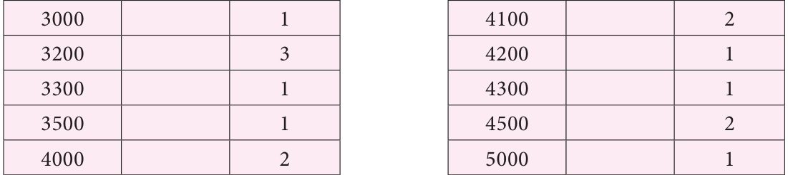
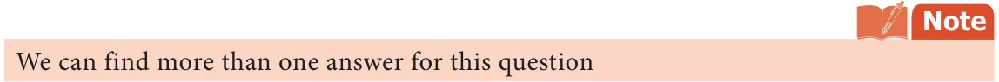
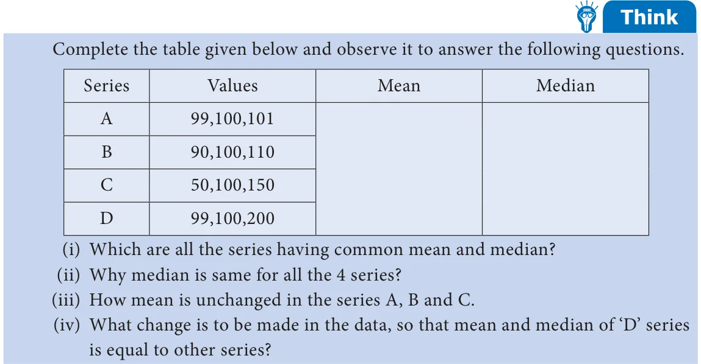

We have discussed the situations where arithmetic mean and mode are the representative values of the given data. Let us think of any other alternative representative value or measures of central tendency. For this let us consider the following situation.
Rajam an old student of the school wanted to provide financial support to a group of 15 students, who are selected for track events. She wanted to support them on the basis of their family income. The monthly income of those 15 families are given below.
` 3300, ` 5000, ` 4000, ` 4200, ` 3500, ` 4500, ` 3200, ` 3200, ` 4100, ` 4000, ` 4300, ` 3000, ` 3200, ` 4500, ` 4100.
Rajam would like to give them an amount to their family. If we find the mean, we get Arithmetic mean, A.M = sum of all values
3300+ 5000+ 4000+ 4200+ 3500+ 4500+ 3200 = +3200+ 4100+ 4000+ 4300+ 3000+ 3200+ 4500+ 4100
\(= \frac{58100}{15} = 3873 3\).
Can the amount of ` 3873.3 be given to all of them irrespective of their salary? Is ` 3873.3 is the suitable representative here? No, this is not suitable here because a student with family income ` 3000 and a student with family income ` 5000 will receive the same amount. Because the representative measure used here is not sutable for the above data, let us find the mode for this data.

Here mode is 3200 which means there are more number of students with a family
income of ` 3200. But this does not suite our purpose.
Hence, mode is also not suitable. Is there any other representative measures that can be used here? Yes.
Let us look at another representative value which divides the data into two halves exactly. First, let us arrange the data in ascending order.
That is, ` 3000, ` 3200, ` 3200, ` 3200, ` 3300, ` 3500, ` 4000, ` 4000, ` 4100, ` 4100, ` 4200, ` 4300, ` 4500, ` 4500, ` 5000.
After arranging the income in ascending order, Rajam finds \(8^{th}\) value ( ` 4000) which divides the data into two halves. It helps her to decide the amount of financial support that can be given to each of the students. Note that ` 4000 is the middle most value.
This kind of representative value which is obtained by choosing the middle item is known as Median.
Thus in a given data, arranged in ascending or descending order, the median gives us the middle value.
Consider another example, where the data contains even number of terms 13, 14, 15, 16, 17 and 18. How to find the middle term for this example? Here the number of terms is
6, that is an even number. So we get, two middle terms namely 3 and 4 term. Then, we
take the average of the two terms (3 and 4 term) and the value we get is the median.
rd th
That is, Median \(= \frac{1}{2} {3\) term \(+ 4\) term} 1
rd th
{ }
2 2 Here, to find median we arrange the values of the given data either in ascending or descending order, then find the average of the two middle values. So we conclude that, to find median,
- (i)arrange the data in ascending or descending order.
- (ii)If the number of terms (n) is odd, then n+2 1 term is the median._{th} _{th}
- (iii)If the number of terms (n) is even, then average of the median. \(\frac{n}{2}\) and \(\frac{n}{2} +\) 1 terms is
Try these
- 1.Find the median of 3, 8, 7, 8, 4, 5, 6.
- 2.Find the median of 11, 14, 10, 9, 14, 11, 12, 6, 7, 7.
Activity
Create a group of 6 to 7 students and collect the data of weight of the students in your class. In each group find mean, median and mode. Also, compare the averages among groups. Are they same for all the groups?
Also find all the three averages for entire class. Now, compare the results with the average of each of the groups.
Example 5.10 Find the median of the following golf scores. 68, 79, 78, 65, 75, 70, 73.
Solution
Arranging the golf scores in ascending order, we have, 65, 68, 70, 73, 75, 78, 79 Here \(n= 7\) , which is odd.
= 72+1 term.
th
Therefore, Median n+2 1 term
= \(\frac{8}{2}\) term
th
\(= 4=\) term \(= 73\)
th
th
Find the median of their weight?
Solution
Arranging the weights in ascending order, we have, 20, 24, 25, 29, 32, 35, 38, 40, 42, 45 Here, \(n= 10\), which is even.
Therefore, median weight= 12 n2 term + n2 +1 term
th th
\(= 12\) 102 term + 102 +1 term
th th
\(= \frac{1}{2} {5\) term \(+ 6\) term}
th th
\(= \frac{1}{2} {32+ 35}\) kg \(= \frac{67}{2} = 33 5\). kg
Hence, Median is 33.5 kg.
Example 5.12 Create a collection of 12 observations with median 16.
Solution
As the number of observations is even, there are two middle values. The average of those values must be 16. We will now find any pair of numbers whose average is 16. Say 14 and 18. Now an example of data with median 16 can be 2, 4, 7, 9, 12, 14, 18, 24, 28, 30, 45, 62.

Example 5.13 The lifetime (in days) of 11 types of LED bulbs is given in days. 365, 547, 730, 1095, 547, 912, 365, 1460, 1825, 1500, 2000. Find the median life time of the LED bulbs.
Solution
Arranging the data in ascending order, we have, 365, 365, 547, 547, 730, 912, 1095, 1460, 1500, 1825, 2000. The number of observations are 11, which is odd.
th
Median = n+2 1 term
th
= 112+ 1 term
Therefore, the median is 912.= Hence, the median lifetime of the LED bulb is 912 days.
6 term \(= 912\)
th
Example 5.14 Find the Median of the following data. 12, 7, 23, 14, 19, 10, 5, 26
Solution
Arranging the data in ascending order, we have 5, 7, 10, 12, 14, 19, 23, 26. Here, \(n= 8\) , which is even.
Therefore, Median \(= 12\) 82 term+ \(82 +\) 1 term
\(= \frac{1}{2} {4\) term \(+ 5\) term}
\(= \frac{1}{2} {12+ 14} = \frac{26}{2} = 13\)
Therefore, the Median is 13.
